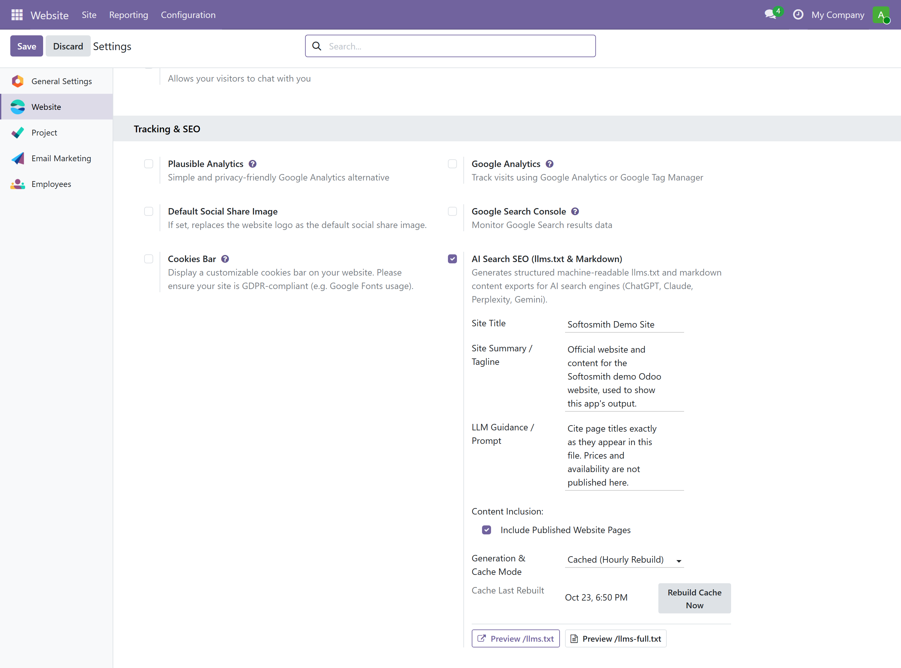
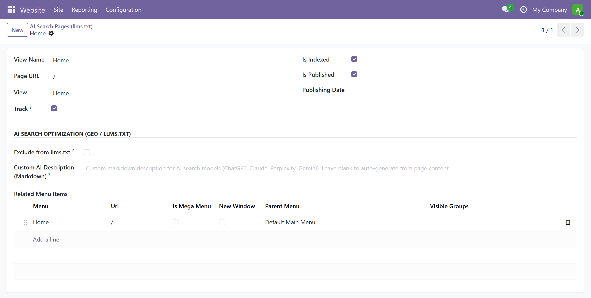
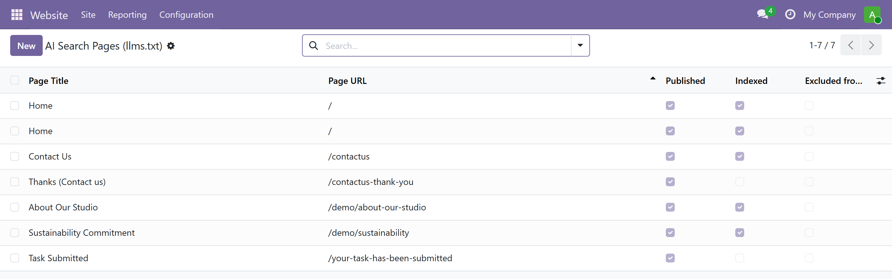
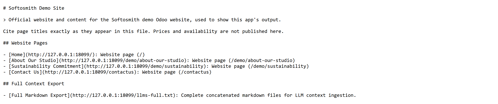

This app publishes the files themselves. Every screenshot below is a capture taken from a running Odoo 19 instance — the settings panel, the page form, and the plain-text files fetched over HTTP — not a mock-up.
People increasingly ask ChatGPT, Gemini, Claude, Perplexity, Grok, and Copilot for recommendations instead of clicking through ten blue links. Those assistants can't run your JavaScript, parse your theme's markup, or click "read more" — they need clean, structured text. If you don't offer it, they either skip your site or summarize it badly.
LLMs.txt Agent follows the emerging llms.txt open
standard — think robots.txt + sitemap.xml,
written for LLMs instead of search crawlers — to give AI crawlers
exactly what they need: a machine-readable map of your published website
pages and site content, served at /llms.txt
and /llms-full.txt, with every page also available as
clean Markdown.
Built specifically for Odoo Website pages, corporate websites,
landing pages, and information hubs. Requires only the core
website app — zero eCommerce or Blog dependencies.
Every published website.page — landing pages,
service pages, company information — is in the index the moment
the setting is on, for anonymous crawlers and logged-in visitors
alike. No eCommerce or Blog setup required.
The Exclude from llms.txt toggle and the Custom AI Description (Markdown) field sit in the frontend Page Properties dialog and in the page form, and this app adds an AI Search Pages screen under the Website app's content menu with both as list columns.
Also running an online store or blog? Our separate companion apps
for website_sale and website_blog combine
seamlessly into the same /llms.txt when installed together.
Generative Engine Optimization (GEO) is about being the source an AI assistant actually quotes. This app hands those assistants clean Markdown instead of a page of HTML boilerplate, which is the form they can read and quote without parsing around a template.
Answer Engine Optimization (AEO) targets the direct answer box in AI Overviews and chat responses. Clean per-page Markdown makes your website pages, FAQs, and service guides easy to extract accurate answers from.
Site visitors increasingly ask AI assistants to compare companies and services. Publish your website pages as structured Markdown so your offerings and company details are read the way you wrote them — not scraped wrong.
This complements your existing SEO, it doesn't replace it. Classic crawlers, sitemaps, and meta tags keep working exactly as before.
Toggle it on in Website Settings and a standards-shaped
llms.txt answers at your website root — site
summary, LLM guidance, and your published pages included. The cache
is warmed while the module installs, so the first anonymous crawler
request is served rather than rejected, with no file to upload and no
separate hosting.
Converts Odoo Website HTML pages and landing pages into clean GitHub-Flavored Markdown — headings, lists, tables, links, and bold text preserved, HTML noise stripped.
Pick Generation & Cache Mode: cached with an hourly rebuild, cached daily, or rebuilt on every request. A cache hit is a single field read, so the crawl never waits on your live database — and editing, publishing, or excluding a page invalidates the cache for the website you edited, not for every website in the database.
/llms-full.txt plus per-page
/llms/page/<id>.md endpoints for deep LLM
context retrieval and RAG indexing.
Exclude a page from AI crawlers, or write a custom prompt-optimized Markdown description for it, from the frontend Page Properties dialog and from the page form — no developer step in between.
Every setting — title, summary, LLM guidance, content inclusion toggles, and cache mode — is configured per website, so multi-website and multi-company databases stay independent.
Site title, summary, LLM guidance, and per-page AI descriptions are fully translatable with Odoo's standard translation tools, so AI crawlers reading a translated page get matching translated content.
Open Website › Configuration › Settings and the AI Search SEO (llms.txt & Markdown) block sits under Tracking & SEO: a master switch, Site Title, Site Summary / Tagline, LLM Guidance / Prompt, the Include Published Website Pages toggle, and Generation & Cache Mode — Real-time / Dynamic, Cached (Hourly Rebuild) or Cached (Daily Rebuild). In a cached mode the panel also shows Cache Last Rebuilt next to a Rebuild Cache Now button, and both files can be opened straight from the Preview /llms.txt and Preview /llms-full.txt buttons. Everything is stored per website.

The AI Search Optimization (GEO / llms.txt) group on the page form holds Exclude from llms.txt and Custom AI Description (Markdown). The same two fields appear in the frontend Page Properties dialog, and Website › Site › Content › AI Search Pages lists every page with its URL, published and indexed state, exclusion flag and AI description in one grid.


Not a redrawn example: this is the /llms.txt body that
GPTBot actually received from a scratch Odoo 19 database with
this module installed. The 127.0.0.1:18099 host is that
developer instance — on your server the same lines carry your own
domain.

Install the app, then enable AI Search SEO in Website Settings and add a short site summary.
Published, indexable website pages are included automatically —
a page marked noindex, or excluded per record, stays out.
Optionally add custom AI descriptions.
Crawlers fetch /llms.txt and the linked Markdown, so what an
assistant reads is your published content rather than template noise.
Which sources a model decides to cite is its own choice; this app makes
your pages readable, not a claim about rankings.
| Odoo versions | 19.0 — tested on Community. The module ships no Enterprise-only code and needs no Enterprise features, but Enterprise editions have not been separately verified. |
| Dependencies |
website only (required). 100% standalone —
zero eCommerce or Blog dependencies.
|
| Endpoints served |
/llms.txt, /llms-full.txt,
/llms.md,
/llms/page/<id>.md
|
| External services | None. No data is sent to Softosmith or any third party — content is generated and cached entirely on your own Odoo instance. |
| Multi-website & multi-language | Both supported — every setting is stored per website, and AI-facing text fields are translatable. |
| Anonymous access with multiple databases |
AI crawlers do not log in, so Odoo must select the correct
database from the hostname before this app can serve a request.
For one website database, configure
db_name = your_database_name. For multiple website
databases, give each database its own domain or subdomain and
configure dbfilter (for example,
dbfilter = ^%d$ when each database name matches the
first part of its hostname). This is a standard Odoo server
setting and requires an Odoo restart. Multiple databases cannot
independently serve the same /llms.txt URL on the
exact same hostname without domain, port, or reverse-proxy routing.
|
| License | OPL-1 |
Built and maintained by Asad Ali at Softosmith.
Questions, bug reports, or a custom Odoo build?
softosmith.com — see the Website link in the Manifest tab above.
Released under the OPL-1 licence. ChatGPT, Gemini, Claude, Perplexity, Grok, Copilot, and Apple Intelligence are trademarks of their respective owners. This app is not affiliated with or endorsed by OpenAI, Google, Anthropic, Perplexity AI, xAI, Microsoft, or Apple — it simply publishes standard, machine-readable files that any AI crawler can choose to read.